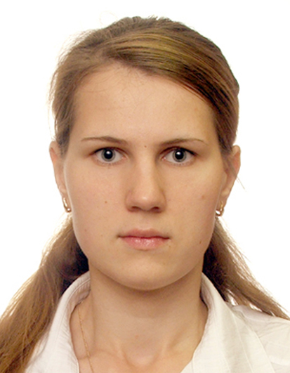

Ягодарова Анастасия Николаевна
- 38 лет
- г. Ижевск, Республика Удмуртия
- +7 (904) 311-6247
- av.yagoda@yandex.ru
Навыки
- Умение разбивать задачи на подзадачи;
- Умение определять последовательность работ;
- Базовые знания о структуре и функционировании информационных систем;
- Знание принципов построения сети передачи данных, модели OSI ISO, протоколов стека TCP/IP, протоколов динамической маршрутизации, основных видов услуг телекоммуникационной компании;
- Практические навыки работы в информационных системах управления, в том числе: Jira, SharePoint, Confluence;
- Продвинутый опыт работы с приложениями MS Оffice (Excel, Visio);
- Знакомство с методами управления проектами (Agile, Scrum, Kanban);
- Саморазвитие, стрессоустойчивость, самостоятельность, уверенность в себе, управленческие и организаторские способности;
Опыт работы
-
07.2007 – 11.2021
ПАО "Ростелеком", г. Ижевск – ведущий инженер
- Эксплуатация коммутационного оборудования EWSD v.17, SoftX3000, Si2000. Решение технических проблем. Работа с технической поддержкой;
- Эксплуатация сетевого оборудования (голосовые шлюзы) Eltex, Huawei, Cisco, НПО-Телеком. Решение технических проблем. Работа с технической поддержкой;
- Тестирование оборудования, ввод в эксплуатацию;
- Написание инструкций по настройке голосовых шлюзов;
- Руководство персоналом телефонной станции (6 человек). Назначение работ. Составление плана работ. Проведение инструктажей по охране труда;
-
11.2021 – 10.2022
ПАО "Ростелеком", г. Ижевск – начальник станционного участка
- Руководство станционным участком (18 человек);
- Оборудование телефонных станций и систем передач г. Ижевск;
- Планирование и реализация проекта модернизации телефонной сети в городе: переключение устаревших АТС, освобождение помещений, уменьшение монтированной ёмкости;
- Ведение документации по охране труда в участке;
-
10.2022 – по настоящее время
ПАО "Ростелеком", г. Ижевск – ведущий инженер Направления региональных сетей Волга, Урал
- Централизация управления оборудованием телефонии в кластере "Волга";
- Заместитель руководителя направления. Ответственная за кластер "Волга";
- Анализ аварийности. Взаимодействие со смежными отделами для улучшения предоставления сервисов;
Образование
-
Ижевский государственный технический университет, г. Ижевск
Квалификация - инженер
Окончание: 2007 г.
Специальность: "Сети связи и системы телекоммуникаций"
-
Ижевская государственная сельскохозяйственная академия, г. Ижевск
Квалификация - экономист-менеджер
Окончание: 2009 г.
Специальность: Экономика и управление на предприятии агропромышленного комплекса
-
Дополнительные курсы
- 2008 - Эксплуатация, администрирование и техническое обслуживание АТС Si2000 V5;
- 2010 - обучение в Сетевой академии Cisco ИжГТУ "Сертифицированный специалист по сетям Cisco (CCNA Discovery)";
- 2010 - обучение по курсу NGN SoftX3000 Huawei;
- 2017 - прохождение курса "IP-телефония Asterisk: основной курс";
- 2021 - обучение в МГУУ Правительства Москвы по дополнительной профессиональной программе повышения квалификации “Пульт управления”;
- 2022 - Курс "Основы Python"
Награды
- 2022 г. - Благодарственное письмо от Главы Удмуртской Республике А.В. Бречалова
- 2020 г. - Почетная грамота Главы муниципального образования г. Ижевск О.Н. Бекмеметьева